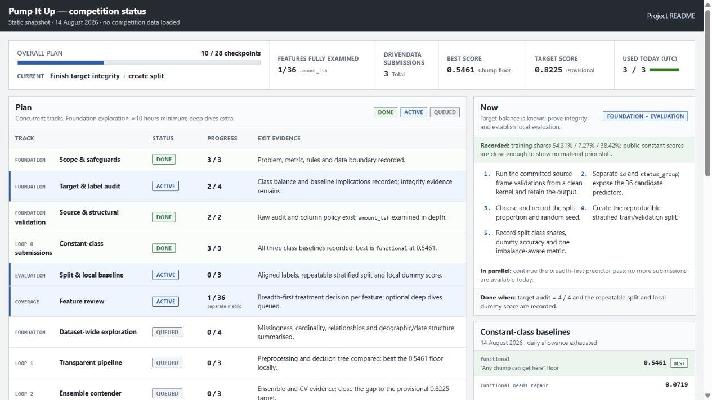

STAGE 01
Active
Pump It Up
Practice competition · multiclass classification
Build a leakage-safe multiclass model for Tanzanian waterpoint condition.
- Local work since
- 29 July 2026
- Status snapshot
- 14 August 2026